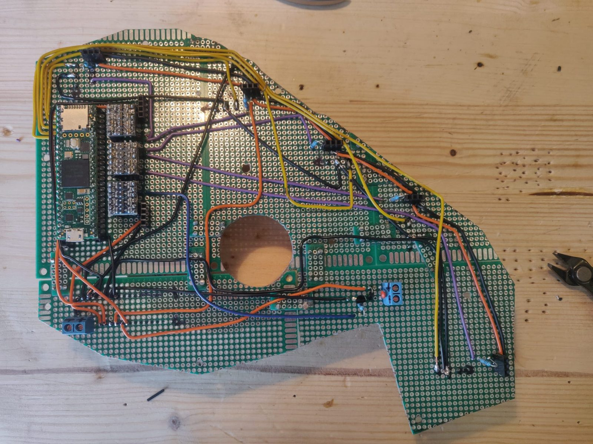
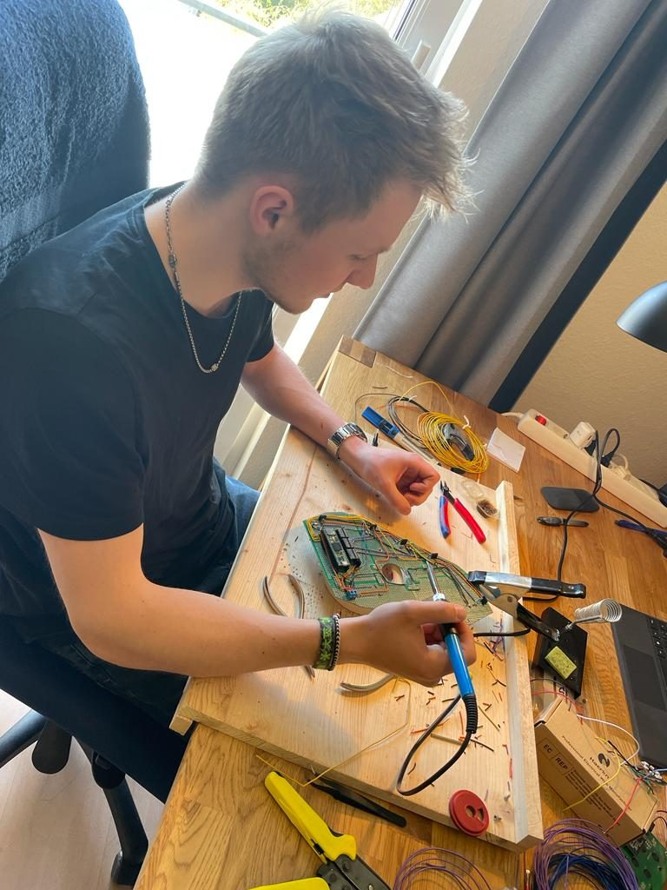

Automated Beverage Robot
Custom PCB (KiCad) · Firmware · Side project with my brother
A for-fun side project I built together with my brother alongside our studies: a robot that automatically detects a glass placed underneath it and refills it on its own.
We designed and built the entire thing ourselves, from the CAD models for the housing to the electronics. I digitized the custom PCB in KiCad, hand-soldered it, and wrote all of the firmware that runs the robot.
The onboard display is interactive — guests enter their name before ordering, and the robot keeps track of details like how many drinks each person has had.
The clip alongside captures a big milestone for us: the first time every component came together as a whole, and the very first glass got filled.

Custom PCB (KiCad)
Soldering the PCB